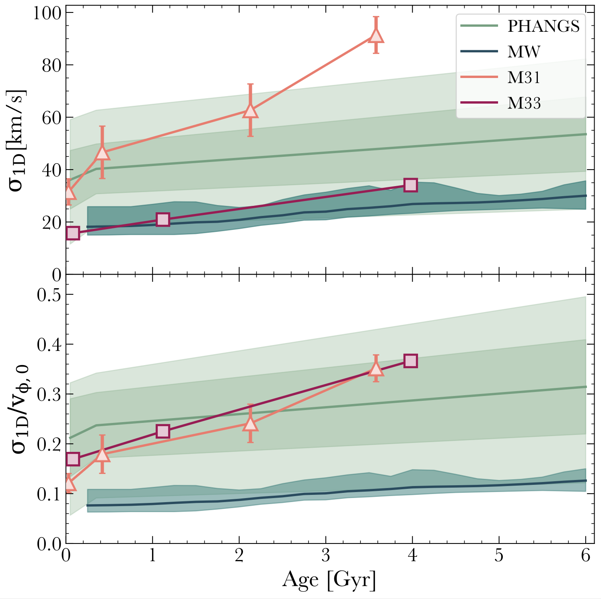

Is the Milky Way A Typical Disk Galaxy? Probably Not!
Comparing stellar velocity dispersion versus age in the MW and nearby galaxies
Top: The line-of-sight (1D) velocity dispersion of stars, σ1D, versus age, as observed in the MW, M31 (Dorman 2015), M33 (Quirk 2022), and 16 nearby galaxies from the PHANGS survey (Pessa 2023). For the MW, the teal line and shaded region show the mean and full scatter across the observational works in Figure MW obs for σ1D = σ3D / √3. The light green line and shaded regions show the median, 68% scatter, and full range across the PHANGS sample.Bottom: Same, but scaled to each galaxy’s rotational velocity, vφ,0, for young stars today, to provide a dimensionless metric of dynamical coldness that is more comparable across these different-mass galaxies. σ1D and σ1D / vφ,0 increase with age for all galaxies and at all ages, though at differing rates with age. M31 and M33 have broadly similar σ1D / vφ,0, which also agrees with (lies within the 68% scatter) of PHANGS. However, among this total sample of 19 galaxies, the MW is an outlier, being dynamically colder in terms of σ1D / vφ,0 than all but one galaxy from PHANGS.
For more on the MW’s kinematics, see McCluskey et al. (2025), which discusses the possibility that the Galaxy’s unusually cold dispersions reflect rapid early assembly, disc settling, and a quiet late-time merger history.